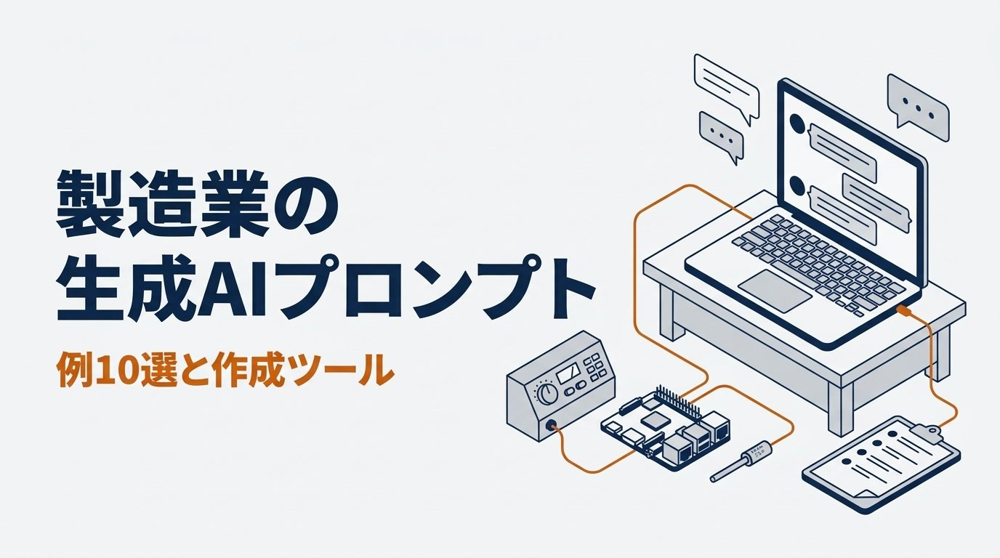
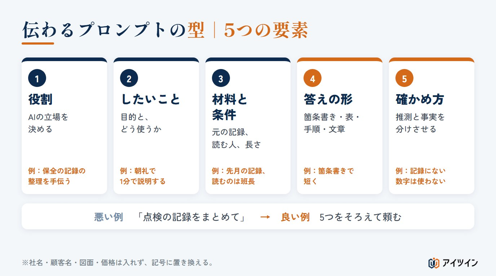
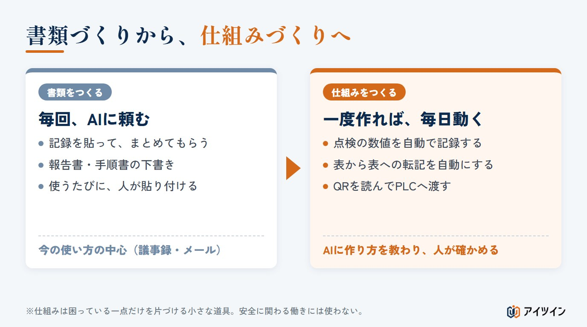
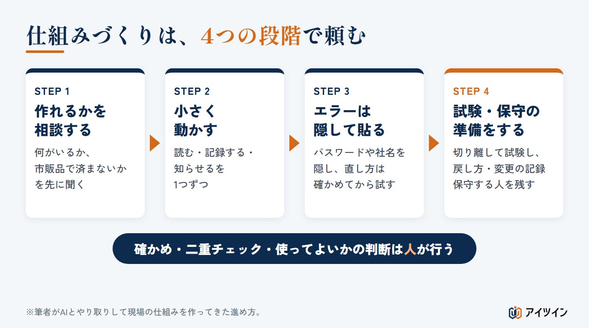

「生成AIを使ってみたが、ありきたりな答えしか返ってこない」「メールや議事録以外に、現場で何に使えるのか分からない」。製造業で生成AIを使い始めると、多くの方がこの2つで手が止まります。
本記事では、製造業の生成AIプロンプトを、すぐ使える例10選で紹介します。伝わるプロンプトの型と悪い例・良い例、点検の記録や不良の原因整理に使える例のほか、後半では書類づくりから一歩進めて、AIに現場の仕組みを作ってもらう頼み方もまとめました。選んで書き込むだけでプロンプトができる作成ツールも付けています。
この記事でわかること
- 製造業での生成AIの使われ方と、まだ届いていない所【2026年・白書】
- 伝わるプロンプトの型（5つの要素）と、悪い例・良い例
- 点検の記録・不良の原因・手順書など、現場ですぐ使えるプロンプト例
- 記録・読み取り・転記の仕組みをAIに作ってもらう頼み方と、4つの段階
- 選んで書き込むだけで、AIに渡す文章ができる作成ツール
製造業の生成AI活用の現状【2026年・白書】
業務で生成AIを使っているという回答は86.4%
総務省の令和8年版情報通信白書によると、企業に勤める人への調査で、生成AIの活用方針について「わからない」と答えた人を除いて集計すると、自社の何らかの業務で生成AIを使っているという回答は86.4%でした。前の年度の調査から大きく上がり、ほかの国との差も縮まっています。生成AIは、もう一部の企業だけの道具ではありません。
使い道は「議事録・メール」が約7割で最も多い
同じ調査で業務ごとの使われ方を見ると、日本では「議事録・メール作成補助」が約7割と最も多く、「営業・販売」が約6割、「社内ヘルプデスク」が約5割と続きます（会社の仕組みとして使う場合と、個人が自分の作業に使う場合を合わせた数字です）。効果を感じていると答えた割合も、議事録・メールが約7割と、ほかより目立って高い結果でした。今の生成AIは、主に文章を書く手伝いとして使われています。
現場の困りごとには、まだ届いていない
これらの数字は、生成AIで現場の作業を自動にできる割合ではありません。一方で、製造業の現場には、文章では片づかない困りごとが多くあります。毎日の点検で手書きしている数値、生産終了で替えがきかない機器、表から表への転記。生成AIは文章だけでなく、こうした作業を自動にする小さな仕組みを作る手伝いもできます。ただし、どちらに使う場合も、答えの質は渡す文章（プロンプト）で大きく変わります。
この章のまとめ
- 何らかの業務で生成AIを使っているという回答は86.4%（「わからない」を除いた集計）
- 使い道は議事録・メールが約7割で最も多く、文章の手伝いが中心
- 現場の困りごとを解決する仕組みづくりにも使えるが、プロンプトが大切
伝わるプロンプトの型｜5つの要素
生成AIは、入力された文章をもとに答えを作ります。現場の事情や設備の状態を知っているわけではないため、条件を伝えないと、どの工場にも当てはまる一般論や、実際の現場とは違う答えが返ってきます。決まった規格があるわけではありませんが、筆者は次の5つの要素をそろえて頼むようにしています。

型の5つの要素｜役割・したいこと・材料と条件・答えの形・確かめ方
- 役割：「あなたは製造業の品質の記録の整理を手伝うアシスタントです」のように、AIの立場を決める
- 何をしたいか・どうしたいか：目的と、できたものをどう使うか（朝礼で説明する、班長に渡す など）
- 材料と条件：元になる記録やメモ、読む人、長さ、現場の条件
- 答えの形：箇条書き、表、手順、そのまま使える文章のどれで欲しいか
- 確かめ方：記録にないことは推測で補わない、数値に単位と元の記録の場所を付ける、分からないときは質問させる など
悪い例と良い例｜「まとめて」だけでは伝わらない
たとえば点検の記録をまとめてもらう場合、悪い例は「点検の記録をまとめて」だけです。何のために、誰が読むのかが分からないため、AIは当たり障りのない要約を返します。良い例は「先月の点検の記録から、異常の傾向を、朝礼で1分で説明できる長さの箇条書きにしてください。読むのは班長です。記録にない数字は使わないでください」のように、目的・読む人・形・確かめ方まで書いたものです。同じ材料でも、答えの使いやすさが大きく変わります。
答えが合わないときは、条件を足して聞き直す
1回目の答えが的外れでも、あきらめる必要はありません。「読む人は現場の班長なので、専門用語を減らしてください」「設備ごとではなく、項目ごとに並べ直してください」のように、足りなかった条件を書き足して聞き直します。うまくいった頼み方は、自分用のひな形として残しておくと、次から使い回せます。ただし、AIの種類や設定が変わると答えも変わるため、ひな形もときどき見直します。
また、生成AIの答えには、それらしく見える間違いが混ざることがあります。特に、元の記録にない数字や、規格・法令の内容は、そのまま信じずに元の資料で確かめます。「記録にない数字は使わない」「分からないことは分からないと書く」と頼んでおくと、間違いを減らせます。
社名・図面・製造条件など、会社の情報は入れない
サービスによっては、入力した内容や会話の履歴が保存されたり、AIの学習やサービスの改善に使われたりします。学習に使わない設定でも、保存されないとは限りません。社名、顧客名、個人の名前、図面、価格だけでなく、製品の仕様、設備の構成、製造条件、不良の詳しい内容なども、会社の許可なく入力しないでください。「A社」「品番X」のように記号へ置き換えても、特殊な設備や寸法、数量の組み合わせから会社や製品が分かることがあります。使う前に、会社の決まりと、サービスの利用規約を確かめます。
この章のまとめ
- 役割・したいこと・材料と条件・答えの形・確かめ方の5つをそろえて頼む
- 合わないときは条件を足して聞き直し、記録にない数字は元の資料で確かめる
- 社名・図面・製造条件など会社の情報は、会社の許可なく入れない
現場ですぐ使えるプロンプト例6選｜書類とデータをまとめる
ここからは、そのまま写して使えるプロンプトの例です。【 】の中を自分の現場に合わせて書き換えてください。最後に、元になる記録やメモを貼り付けて使います。
例1：点検の記録から、異常の傾向をまとめる
プロンプト例1
あなたは、製造業の保全の記録の整理を手伝うアシスタントです。 下に貼る【先月】の点検の記録から、管理値を超えた値と、過去の記録と大きく違う値を拾い出し、設備名・項目・値と単位・日付を付けて箇条書きにしてください。 管理値が記録にない場合は、あなたの判断だけで異常と決めつけず、「記録の書き間違いの可能性があるもの」と分けてください。 朝礼で1分で説明できる長さにし、読むのは現場の班長です。記録にない数字は使わないでください。
例2：不良の記録から、原因の候補を4Mで整理する
プロンプト例2
あなたは、製造業の品質の改善を手伝うアシスタントです。 下に貼る【3か月分】の不良の記録から、原因の候補を、人・機械・材料・方法の4つに分けて表にしてください。 それぞれ「記録から言えること」と「推測」を分けてください。「人」は個人の責任と決めつけず、作業方法・教育・作業の負担の面で整理してください。 記録だけで原因を決められない場合は断定せず、現場で確かめる順番と、追加で集めるとよい記録（ロット、生産数など）を示してください。
例3：保全の記録から、次に見る設備の順番を決める
プロンプト例3
あなたは、設備の保全の計画を手伝うアシスタントです。 下に貼る【1年分】の故障と修理の記録から、故障の回数と止まった時間が多い順に設備を並べ、表にしてください。 同じ部品の交換がくり返されている設備があれば、別に書き出してください。 回数と時間だけでは順番を決められない点（安全・品質・ライン全体への影響、予備機の有無など）があれば、その旨と、追加で必要な情報も書いてください。
例4：ベテランの話から、作業手順書の下書きを作る
プロンプト例4
あなたは、製造現場の作業手順書づくりを手伝うアシスタントです。 下に貼るのは、ベテランに【段取り替え】のやり方を聞いたときのメモです。 番号つきの手順ごとに「作業の内容」「なぜそうするか」「注意する危険」「確かめること」を分けて書いてください。 メモにない作業方法、電源の切り方、安全装置の扱い、数値や設定値は推測で足さず、「要確認」と書いてください。 これは下書きで、今の作業標準と安全の決まりに照らし、現場の責任者が確かめてから使います。
例5：交代の引き継ぎメモを、決まった形に整える
プロンプト例5
下に貼る走り書きの引き継ぎメモを、「設備の状態」「品質で気になること」「次の班にお願いすること」の3つに分けて、短い箇条書きに整えてください。 メモにないことは足さないでください。対応が必要なことは「未対応・対応中・済み」を分け、担当や期限がなければ「未記入」としてください。設備の停止や品質の保留は省かないでください。
例6：ヒヤリハットの報告から、対策の案を出す
プロンプト例6
あなたは、工場の安全活動を手伝うアシスタントです。 下に貼るヒヤリハットの報告について、起きた原因の候補と、対策の案を「危ないもの自体をなくす」「作業のやり方を変える」「設備で守る」「決まりや表示で守る」「保護具」に分けて出してください。 人の注意だけに頼る対策に偏らないようにし、その対策で新しい危険が生まれないかも書いてください。 対策の案は参考とし、作業する人と安全の担当者で確かめて決めます。
どの例も、AIの答えは下書きです。数字の転記の間違いや、記録にない話が混ざっていないかを、元の記録と照らしてから使ってください。特に作業手順や安全の対策は、AIの答えをそのまま現場で行わないでください。
この章のまとめ
- 点検・不良・保全・手順書・引き継ぎ・ヒヤリハットに、型どおりの文章で使える
- 【 】を自分の現場に合わせて書き換え、元の記録を貼り付けて使う
- 答えは下書き。元の記録と照らしてから使う
書類づくりから仕組みづくりへ｜AIに現場の道具を作ってもらう
ここまでの例は、毎回、記録を貼ってAIに頼むものでした。もう一歩進めると、毎日の記録や転記そのものを、AIに作ってもらった仕組みに任せることができます。筆者はプログラムを書いたことがありませんが、点検の記録や、生産終了したQRリーダーの置き換えを、AIに頼んで作ってきました。ただし、AIで作り始めることはできても、設備につないで安心して使えるようにするには、仕様の確認・試験・保守が欠かせません。

書類は毎回頼むが、仕組みは一度作れば毎日動く
仕組みといっても、大きなシステムではありません。小さなコンピューター（ラズパイ）と、表計算ソフトの自動化で作れる、困っている一点だけを片づける道具です。頼み方の型は書類と同じですが、使うもの（機材・つなぐ相手）と、うまく動かないときにどうするかを必ず書きます。以下の例は、筆者の経験をもとにした頼み方の例です（当時の文章は残っていません）。
例7：点検の数値を、毎日自動で記録する
プロンプト例7
あなたは、ラズパイとPythonで製造現場の小さな仕組みを作るのを手伝うエンジニアです。 【何をしたいか】制御盤の中の、前に熱くなったことがある部分の温度の変わり方を、毎日記録したい。 【どうしたいか】10分ごとに記録し、決めた管理値を超えたら画面に知らせたい。 【使うもの】ラズパイ、温度センサー1つ。設備のネットワークにはつながない。センサーの種類・測れる範囲・取り付け方から一緒に考えてほしい。 【確かめ方】センサーの断線、測れる範囲の外、おかしな値を見分け、正しく測れないときは普通の温度として扱わないでほしい。 この仕組みは点検を助ける記録で、火災を見つけたり設備を守ったりする働きには使いません。 私はプログラムを書いたことがありません。準備から1つずつ、手順を教えてください。
温度の記録は点検を助けるもので、火災を防ぐ設備の代わりにはなりません。制御盤を開ける作業やセンサーの取り付けは、電気の知識のある人が安全を確かめて行います。画面の表示だけでは、見ていないときの変化を見逃すため、誰がいつ確かめるかも決めておきます。この事例は、特集の別の記事で詳しく紹介する予定です。
例8：表から表への転記を、自動にする
プロンプト例8
あなたは、表計算ソフトの自動化を手伝うアシスタントです。 【何をしたいか】毎日、生産実績の表から、品番ごとの数を月の集計表へ手で写している。これを自動にしたい。 【どうしたいか】ボタンを1回押すと、その日の分が集計表の正しい行に入るようにしたい。 【確かめ方】日付・品番・ラインの組み合わせで見分け、同じデータを2回取り込んでも二重に足されないようにしたい。品番が見つからない、数が数字でないときは写さずに知らせてほしい。途中で止まったときは、元の表を残し、中途半端な集計にならないようにしたい。 作る前に、元の表をどう整えておくとよいかも教えてください。
表計算の自動化は、元の表の列の並びや名前が変わると動かなくなることがあります。表の形を決めて変えないこと、元の表のバックアップと、間違えたときの直し方も、あわせて決めておきます。
例9：QRコードを読み、PLCへ渡す
プロンプト例9
あなたは、ラズパイとPythonで製造現場の小さな仕組みを作るのを手伝うエンジニアです。 【何をしたいか】生産終了したQRコードリーダーの代わりに、製品のQRラベルを読み取りたい。 【どうしたいか】読んだ文字を今までと同じ形でPLCへ送り、PLCのプログラムは変えずに使いたい。 【使うもの】ラズパイ4、USBカメラ。PLCとはLANでつなぐ（設備のネットワークとは分かれた線）。 【確かめ方】文字数と形を確かめてから送り、読めないときは前の製品の値を使い回さず、PLCに読み取りNGを知らせたい。通信が切れたとき、同じ値を2回読んだときの動きも決めたい。 最初に、今のQRリーダーとPLCの通信の条件（送る形、文字数、区切り、送るタイミング）を確かめる手順を教えてください。分からない点は、作る前に質問してください。 ラズパイは読み取りと値の受け渡しだけにし、非常停止などの安全の働きや安全回路にはつなぎません。
ふつうのPLCに止めるプログラムが入っていても、それだけで人の安全が守られるわけではありません。安全の働きは、機械の危険を見積もったうえで作られた安全のための回路や機器が担います。また、線を分けても、別の場所で設備のネットワークとつながっていれば分けたことになりません。ネットワークのつながり方は、設備の担当者と図で確かめます。
例10：作った仕組みの、確かめ方をAIに出してもらう
プロンプト例10
あなたが作り方を教えてくれた仕組みについて、現場で使い始める前に確かめることを一覧にしてください。 読めない値、同じ値が2回届く、通信が切れる、通信が戻る、電源を入れ直す、長く動かす、の場面を必ず入れ、「試す条件」「操作」「正しい動き」「結果」「合否」を記録できる表にしてください。 正しい動きが決まっていない項目は、あなたが決めずに「要確認」としてください。
この章のまとめ
- 毎日の記録や転記は、AIに作ってもらった小さな仕組みに任せられる
- 仕組みを頼むときは、使うものと、うまく動かないときの動きを必ず書く
- 仕組みは値を記録・受け渡すだけにし、安全の働きや安全回路にはつながない
仕組みづくりのプロンプトは、一度で書かない｜4つの段階
書類は1回の頼み方で形になりますが、仕組みは1回のプロンプトで完成させようとしないことが大切です。筆者は、次の4つの段階に分けてAIとやり取りしてきました。

STEP1：作れるか・何がいるかを、先に相談する
いきなり作り方を聞かず、「この仕組みは作れるか」「何を買えばよいか」「市販品で済むなら、そのほうがよいか」を先に相談します。AIは市販品の探し方も手伝えるため、作らないほうがよい場合にも気づけます。
STEP2：1つの働きずつ、小さく動かす
温度を読む、記録する、知らせる、のように働きを分け、1つずつ動かして確かめます。全部を一度に作ると、動かないときにどこが悪いのか分からなくなります。
STEP3：エラーは隠す所を隠して貼り、直し方を確かめてから試す
動かないときは、画面に出た文字を自分で要約せず、貼って「このエラーが出ました。どうすればよいですか」と聞きます。何をした直後に出たかも書き添えると、答えが早く正確になります。ただし貼る前に、パスワード、IPアドレス、ユーザー名、フォルダの名前、社名、製品の番号などが含まれていないかを確かめ、別の文字に置き換えます。AIが示した直し方やコマンドは、何を変える操作か、元に戻せるかをAIに聞いてから試します。ファイルを消す、ネットワークの設定を変えるなど、設備やデータに関わる操作は、詳しい人に確かめてから行います。
STEP4：試験・復旧・保守の準備をする
動いたら、例10のように確かめ方の一覧を出してもらい、まず設備から切り離した状態や試しのデータで、人が試します。最後に「読み取りNGのときに現場の人がすること」「止まったときの戻し方」を手順書にしてもらいます。プログラムの最新版と変更の記録、設定値、バックアップの置き場所、保守する人も書き残します。動いているかを確かめ、使ってよいかを決めるのは人です。使い始めのしばらくは、今までのやり方と二重にチェックします。
この章のまとめ
- 仕組みは、相談→小さく動かす→エラーを聞く→試験・復旧・保守の準備、の順で作る
- エラーは隠す所を隠して貼り、直し方は何を変えるかを確かめてから試す
- 確かめと二重チェック、使ってよいかの判断は人が行う
プロンプト作成ツール｜選んで書き込むだけで、AIに渡す文章ができる
ここまでの型を、選んで書き込むだけで文章にできるツールです。「書類を作る」「データをまとめる」「仕組みを作る」から選び、分かる欄だけ書き込んでください。「記入例を入れる」を押すと、この記事の例をもとにした記入例が入ります。
AIに渡す文章（プロンプト）の作成ツール
種類を選び、分かるところだけ書き込んでください。空いている欄は、文章から自動で省きます。できた文章は「コピーする」で写し、お使いの生成AIに貼り付けて使えます。社名・顧客名・図面・価格・個人の名前は書かないでください。入力した内容は、このページの中だけで文章にしており、どこにも送っていません。AIの答えは間違いを含むことがあるため、使う前に必ず人が確かめてください。
何をAIに頼みますか
答えの形
プログラムの経験
できた文章
できた文章は、そのままでも使えますが、AIから質問が返ってきたら答えを書き足していくと、さらに自分の現場に合った答えになります。
欄を埋めようとして手が止まったら、それは「まだ決まっていないこと」が見つかった合図です。たとえば確かめ方の欄が書けないなら、読めなかったときに現場で誰が何をするかが決まっていません。AIに頼む前に、その一点を現場で話し合うことが、仕組みづくりではいちばんの近道になります。
アイツインの仕組みづくりの支援
アイツインは、保全の現場での経験をもとに、製造現場の困りごとを、ラズパイとAIで安く解決するお手伝いをしています。
どこに生成AIを使うか、困っている一点から一緒に考える
書類で済むのか、仕組みを作るべきか、市販品を選ぶべきか。点検、転記、生産終了の機器など、どこで、なぜ困っているのかを一緒に整理します。
試作から、二重チェックと手順書まで
AIを使って試作し、現場で動かして結果を確かめ、困ったときの手順を書き残すところまでを支援します。設備のネットワークとの分け方も、一緒に確かめます。
社内で、AIに頼める人を育てる
「作った人しか直せない」状態を避けるために、社内の方がプロンプトを書き、仕組みを作り、直せるようになるための研修もご相談いただけます。内容は、ご相談に合わせてご提案します。
まとめ
生成AIは、多くの企業で使われるようになりましたが、使い道はまだ議事録やメールが中心です。製造業の現場で役立てるには、役割・したいこと・材料と条件・答えの形・確かめ方の5つをそろえた伝わるプロンプトで頼むことが出発点になります。
さらに一歩進めれば、毎日の記録や転記を、AIに作ってもらった小さな仕組みに任せられます。そのときは一度で作ろうとせず、相談から始めて小さく動かし、確かめと二重チェックは人が行います。まずは、本記事の例やツールで、明日の点検の記録から試してみてください。
参考
・総務省「令和8年版 情報通信白書」第Ⅰ部第2章第1節（生成AIの業務利用状況）
・独立行政法人 情報処理推進機構「中小企業の情報セキュリティ対策ガイドライン」
・経済産業省「工場システムにおけるサイバー・フィジカル・セキュリティ対策ガイドライン」
・本記事のプロンプトは、説明のための例です。AIの答えの正しさや、仕組みの安全・品質を保証するものではありません。